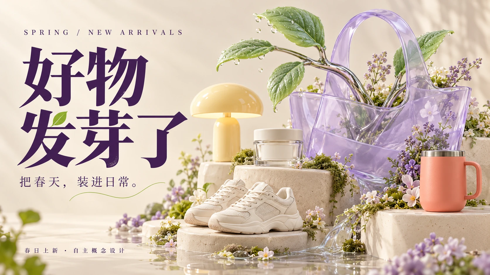
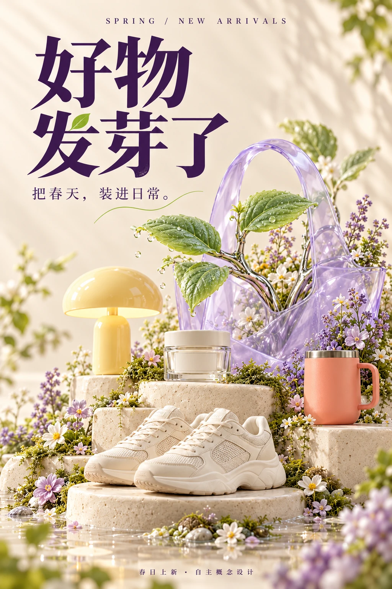
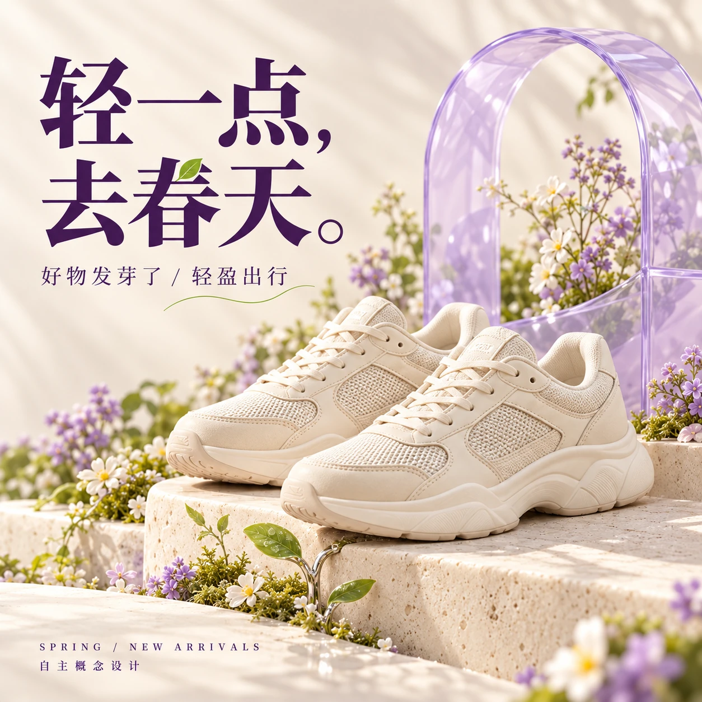
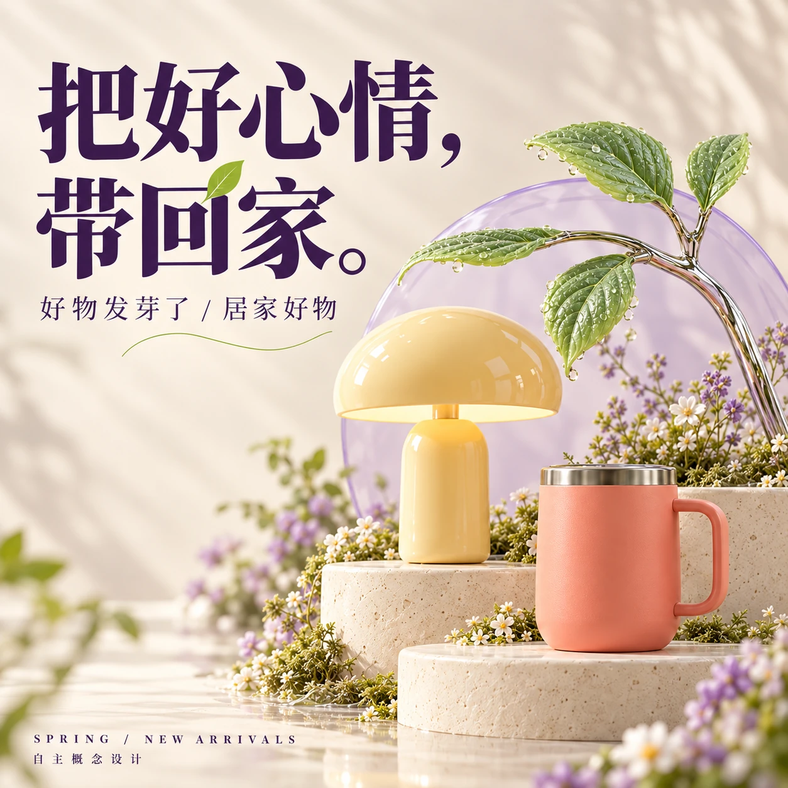

E-COMMERCE / CAMPAIGN / SOCIAL CONTENT
把“春日上新”变成一座长出日常好物的小花园。透明购物袋、金属枝叶与奶油色台阶，在不同品类中延续同一个春天。




主 KV 用完整购物袋与品类集合建立主题。首发文案：“新的季节，从一件让你开心的小东西开始。”
出行稿突出鞋履与轻盈姿态，居家稿突出灯光与温度。系列保留相同字体、色彩和枝叶符号。
互动命题：“拍下你家最有春意的一角。”推荐分享一张成品和一张布置过程，以具体生活细节承接主题。